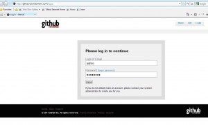
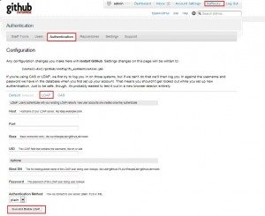

About GitHub-FI :-
GitHub Firewall Install is a version of GitHub you can install behind a corporate firewall. With your own internal GitHub you can combine the best aspects of social code management with the security of your private network.
This document contain below mention things.
1> Installation Of GitHub-FI.
2> Setting up LDAP for Github
3> How to give users administrative privilege through command prompt.
4> Backup And Restoration of Github-FI Server
Github Installation Steps
Entry In hosts file
yourdomain.com:/opt # cat /etc/hosts # # hosts This file describes a number of hostname-to-address # mappings for the TCP/IP subsystem. It is mostly # used at boot time, when no name servers are running. # On small systems, this file can be used instead of a # "named" name server. # Syntax: # # IP-Address Full-Qualified-Hostname Short-Hostname # 127.0.0.1 localhost 168.10.10.10 yourdomain.com 168.10.10.10 github yourdomain.com. yourdomain.com:/opt #
Path of Github Installer
yourdomain.com:/opt # ll total 361248 GitHubFI-2.7-linux-installer.run fi_GitHubFI-2.7-linux-installer.tgz yourdomain.com:/opt # pwd /opt yourdomain.com:/opt #
DNS/URL’s of Github
http://github.yourdomain.com/
http://gist.github.yourdomain.com/
Installation Log
yourdomain.com:/opt # ./GitHubFI-2.7-linux-installer.run ---------------------------------------------------------------------------- Welcome to the GitHub Firewall Install Setup Wizard. ---------------------------------------------------------------------------- Installation folder Please, choose a folder to install GitHub Firewall Install Select a folder [/opt/GitHubFI-2.7]: /opt/github.yourdomain.com ---------------------------------------------------------------------------- Install as a service You can optionally register GitHub Firewall Install as a service. This way it will automatically be started every time the machine is started. Install GitHub Firewall Install as a service? [Y/n]: y ---------------------------------------------------------------------------- Please enter the installation ID. Installation ID []: ******************* (Note : Your installation ID provided by github. ) ---------------------------------------------------------------------------- Please enter the URL (without http://), Hostname, or IP Address you will use to connect to this machine: URL / Hostname / IP []: github.yourdomain.com ---------------------------------------------------------------------------- Github User Account Set first github user credentials. Github User Name [github]: admin Github User Email [user@domain.com]: admin@yourdomain.com Github User Password [********] : Re-enter [********] : ---------------------------------------------------------------------------- Open Signup Select [No] if the site will be publicly accessible. If you select [No], an administrator will need to create new accounts: [1] Yes [2] No Please choose an option [2] : 2 ---------------------------------------------------------------------------- Setup is now ready to begin installing GitHub Firewall Install on your computer. Do you want to continue? [Y/n]: Y ---------------------------------------------------------------------------- Please wait while Setup installs GitHub Firewall Install on your computer. Installing 0% ______________ 50% ______________ 100% ######################################### /opt/github.yourdomain.com/mysql/scripts/ctl.sh : mysql stopped /opt/github.yourdomain.com/memcached/scripts/ctl.sh : Memcached not running /opt/github.yourdomain.com/nginx/scripts/ctl.sh : Nginx not running The server is not available (or you do not have permissions to access it) ---------------------------------------------------------------------------- Setup has finished installing GitHub Firewall Install on your computer. Launch GitHub Firewall Install [Y/n]: y -Info: Starting servers: it may take a while ... Press [Enter] to continue : nohup: redirecting stderr to stdout Starting mysqld.bin daemon with databases from /opt/github.yourdomain.com/mysql/data |/opt/github.yourdomain.com/mysql/scripts/ctl.sh : mysql started at port 3306 |/opt/github.yourdomain.com/memcached/scripts/ctl.sh : Memcached started -/opt/github.yourdomain.com/nginx/scripts/ctl.sh : Nginx started -Info: To access to GitHub Firewall Install, go to http://github.yourdomain.com from your browser. Press [Enter] to continue : yourdomain.com:/opt #
Once the installation is complete, its will create two user git and mysql, one group git and one service GitHubFI in etc/init.d.
git User
yourdomain.com:/opt/github.yourdomain.com # cat /etc/passwd git:x:1000:1000::/opt/github:/bin/bash mysql:x:1001:100::/home/mysql:/bin/bash yourdomain.com:/opt/github.yourdomain.com #
git Group
yourdomain.com:/opt/github.yourdomain.com # cat /etc/group git:!:1000: yourdomain.com:/opt/github.yourdomain.com #
GitHub Service
yourdomain.com:~ # ll /etc/init.d/GitHubFI -rwxr-xr-x 1 root root 135 Sep 8 03:17 /etc/init.d/GitHubFI yourdomain.com:~ #
Start/Stop github service
/etc/init.d/GitHubFI stop/start/restart/status
Note :- Now we can login to github with admin user
Github Login Screen

Setting up LDAP for Github

host=>ads.yourdomain.com
port=>389
base=>CN=groupname,OU=GROUPS,OU=Ouname,DC=ads,DC=yourdomain,DC=com
uid=>uid
bind_dn=>CN=adsusername,CN=Users,DC=ads,DC=yourdomain,DC=com
password=> ***** (Your user password)
method=>plain
Now after clicking on Save and Enable LDAP, Github FI service will restart.
And after that it will give LDAP login screen
Login with your ADS credential
After first time login its will ask for your mail ID.
Give your mail ID here, and click on “save”
Eg:- ADSUser@yourdomain.com
Login home page
Github Login Screen
For Setting up github account and github client installation on your desktop refer below mention link.
http://help.github.com/
How to give users administrative privilege?
- cd [install-dir]
- ./github-console
- jruby github/script/console fi
- user=User.find_by_login("your_user_handle_here")
- user.gh_role = 'staff'
- user.save
Output
yourdomain.com:~ # cd /opt/github.yourdomain.com/
yourdomain.com:/opt/github.yourdomain.com # ./github-console
bash-3.2# jruby github/script/console fi
Loading fi environment (Rails 2.2.2)
>> user=User.find_by_login("ADSUser")
=> #<User id: 2, login: "ADSUser", crypted_password: "dcb0609c25011121fdb643b5fdf2c13ec72153a2", salt: "fa681554f3866af968917a9f8973a56ca9a85df7", created_at: "2011-09-08 03:48:16", updated_at: "2011-09-08 06:14:47", remember_token: nil, remember_token_expires_at: nil, wants_email: true, disabled: false, plan: nil, billed_on: nil, billingid: nil, auth_token: "63878ccf175c3a1c8fec04ba63acb4a9", upgrade_ignore: nil, upgrade_accept: nil, gh_role: nil, billing_attempts: 0, spammy: false, last_ip: "172.30.209.0", plan_duration: nil, bouncing_email: nil, billing_extra: nil, gift: nil, last_read_broadcast_id: nil, type: "User", raw_data: "3713\b0021W10H00\v\r13A\nÂ020007762çR4660íIÏ36}@X7\e\rn2222[651077727010131/haR...", referral_code: nil, billing_type: "card">
>> user.gh_role = 'staff'
=> "staff"
>> user.save
=> true
Backup And Restoration of Github-FI Server
Backup of Github FI Server
File/DIR need to backup from Github FI server
Following files and directories need to be backup from Github FI server
1) Entire mysql directory from /opt/github.yourdomain.com.
2) Entire Repositories mount point need to be backup
3) /opt/github.yourdomain.com/github/config/database.yml
1) Entire mysql directory from /opt/github.yourdomain.com.
yourdomain.com:/opt/github.yourdomain.com # pwd /opt/github.yourdomain.com yourdomain.com:/opt/github.yourdomain.com #
yourdomain.com:/opt/github.yourdomain.com # ls -la | grep mysql drwxr-xr-x 10 root root 4096 Sep 8 03:17 mysql yourdomain.com:/opt/github.yourdomain.com #
yourdomain.com:/opt/github.yourdomain.com/mysql # pwd /opt/github.yourdomain.com/mysql yourdomain.com:/opt/github.yourdomain.com/mysql #
yourdomain.com:/opt/github.yourdomain.com/mysql # ll total 72 -rw-r--r-- 1 root root 19071 May 5 2009 COPYING -rw-r--r-- 1 root root 5139 May 5 2009 EXCEPTIONS-CLIENT -rw-r--r-- 1 root root 8530 May 5 2009 INSTALL-BINARY -rw-r--r-- 1 root root 1410 May 5 2009 README drwxr-xr-x 2 root root 4096 Sep 8 03:17 bin -rwxr-xr-x 1 root root 801 May 5 2009 configure drwxr-x--- 5 mysql root 139 Sep 8 06:31 data drwxr-xr-x 3 root root 4096 Sep 8 03:17 include drwxr-xr-x 2 root root 4096 Sep 8 03:17 lib -rw-r--r-- 1 root root 653 Sep 8 03:17 my.cnf drwxr-xr-x 2 root root 86 Sep 8 03:17 scripts drwxr-xr-x 3 root root 4096 Sep 8 03:17 share drwxr-xr-x 2 root root 4096 Sep 8 03:17 support-files drwxrwxrwx 2 root root 23 Sep 8 06:39 tmp yourdomain.com:/opt/github.yourdomain.com/mysql #
yourdomain.com:/opt/github.yourdomain.com/mysql # cd data/ yourdomain.com:/opt/github.yourdomain.com/mysql/data # pwd /opt/github.yourdomain.com/mysql/data
yourdomain.com:/opt/github.yourdomain.com/mysql/data # ll total 28692 -rw-rw---- 1 mysql users 6 Sep 8 06:31 yourdomain.com.pid drwx------ 2 mysql users 4096 Sep 8 03:19 github_fi -rw-rw---- 1 mysql users 5242880 Sep 8 06:39 ib_logfile0 -rw-rw---- 1 mysql users 5242880 Sep 8 03:17 ib_logfile1 -rw-rw---- 1 mysql users 18874368 Sep 8 06:39 ibdata1 drwxr-x--- 2 mysql root 4096 Sep 8 03:17 mysql -rw-rw---- 1 mysql root 3128 Sep 8 06:31 mysqld.log drwxr-x--- 2 mysql root 21 Sep 8 03:17 test yourdomain.com:/opt/github.yourdomain.com/mysql/data #
2) Entire Repositories mount point need to be backup
yourdomain.com:/ # ls -la | grep repositories
drwxr-xr-x 3 git git 29 Sep 8 03:24 repositories
yourdomain.com:/ #
3) /opt/github.yourdomain.com/github/config/database.yml
yourdomain.com:/ # cd /opt/github.yourdomain.com/github/config/ yourdomain.com:/opt/github.yourdomain.com/github/config # pwd /opt/github.yourdomain.com/github/config yourdomain.com:/opt/github.yourdomain.com/github/config # yourdomain.com:/opt/github.yourdomain.com/github/config # ll total 104 drwxr-xr-x 2 git git 145 Sep 8 03:17 basic -rw-r--r-- 1 git git 4257 Aug 15 17:29 basic.rb -rw-r--r-- 1 git git 2817 Oct 27 2010 boot.rb -rw-r--r-- 1 git git 318 Sep 8 03:18 database.yml -rw-r--r-- 1 git git 746 Oct 27 2010 environment.rb drwxr-xr-x 2 git git 18 Sep 8 03:17 environments -rw-r--r-- 1 git git 345 Sep 8 03:44 fi_authentication.yml drwxr-xr-x 2 git git 150 Sep 8 03:17 god drwxr-xr-x 2 git git 4096 Sep 8 03:17 initializers drwxr-xr-x 2 git git 69 Sep 8 03:17 languages drwxr-xr-x 3 git git 31 Sep 8 03:17 locale -rw-r--r-- 1 git git 681 Sep 8 03:17 memcached.yml -rw-r--r-- 1 git git 192 Aug 15 17:29 redis.yml -rw-r--r-- 1 git git 57650 Aug 15 17:29 routes.rb drwxr-xr-x 3 git git 19 Sep 8 03:17 solr -rw-r--r-- 1 git git 185 Sep 8 03:17 solr.yml -rw-r--r-- 1 git git 1335 Oct 27 2010 special_mime_types.yml yourdomain.com:/opt/github.yourdomain.com/github/config #
Restoration of Github FI Server
All the backup data are need to restore with there respective path and ownership during restoration process.
{kind=link}
{kind=link}
{kind=link}
{kind=link}
{kind=link}
{kind=link}